농업인 조회 시스템 사용자 매뉴얼
봉화군 농업 업무 담당자를 위한 데스크톱 프로그램입니다. 농업인 정보 조회·필지 확인·보조사업 신청서 작성을 한 자리에서 처리합니다.
0. 이 프로그램은 무엇을 합니까?
FarmBook은 봉화군에서 농업 업무를 보시는 분들을 위해 만들어진 도구입니다. 매일 마주치는 단순 반복 작업을 줄여드리는 게 목표입니다.
이런 일, 자주 있으시죠?
- 농업인 연락처가 필요한데 어디서 봐야 할지 막막할 때
- 이 분이 어느 필지에 농사를 짓는지 확인해야 할 때
- 보조사업 신청을 받았는데 이장님이 대상자 이름만 적어 오셨을 때
예전에는 어떻게 처리하셨나요?
한 분씩 시스템에 들어가서 검색하고, 결과를 받아 적고, 다음 분 또 검색하고… 명단이 길수록 시간이 사라졌습니다.
신청서가 필요할 때는 더 했죠. 메일머지에 넣을 자료부터 표로 만들고, 한글에서 메일머지를 돌리고, 출력해 보면 줄이 어긋나 있고. 그리고 사람마다 정산 방법과 금액이 다르면 결국 한글 파일을 한 사람씩 손으로 작성하는 수밖에 없었습니다.
이제는 이렇게 됩니다
- 한 명을 빨리 찾을 땐 농가 개별조회 — 이름·생년월일·주소·연락처 어떤 단서로도 즉시 검색됩니다.
- 여러 명을 한꺼번에 찾을 땐 농가 일괄조회 — 이름 명단을 엑셀에 적어 올리면 한 번에 매칭, 결과를 그대로 엑셀로 내보냅니다.
- 신청서가 필요할 땐 신청서 작성 — 한글 양식이 자동으로 채워져 나옵니다. 한 명용은 물론, 사람마다 정산 방법·금액이 달라도 엑셀 한 장이면 여러 명분이 한 번에 만들어집니다.
이 매뉴얼은 위 작업을 화면 그대로 따라할 수 있게 안내합니다. 처음 쓰시는 분은 1번부터, 익숙해지신 분은 관심 있는 섹션부터 읽으시면 됩니다.
1. 처음 시작하기
실행
farmbook.exe 파일을 더블클릭하여 실행합니다.
사용자 등록이 안 된 PC입니다. 시스템 관리자에게 IP 등록을 요청하세요.
종료
오른쪽 상단의 ✕ 버튼을 누르거나 평소처럼 닫습니다.
2. 메뉴 설명
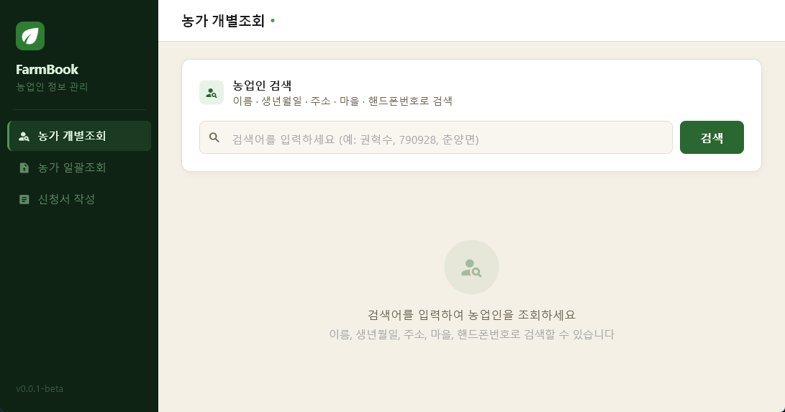
왼쪽 사이드바에서 작업을 선택합니다.
- 🔍 농가 개별조회 — 한 명씩 빠르게 검색
- 📋 농가 일괄조회 — 엑셀로 여러 명 한 번에 조회
- 📝 신청서 작성 — 자동으로 신청서 만들기
3. 농가 개별조회
한 명의 농업인 정보를 빠르게 찾아보는 기능입니다.
3.1 검색하기
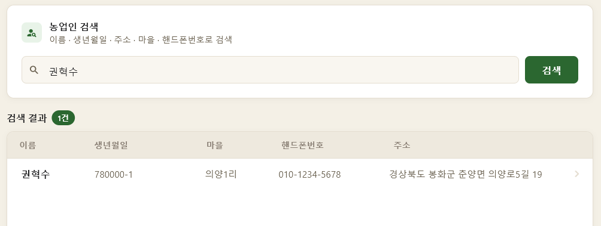
- 사이드바에서 농가 개별조회 클릭
- 상단 검색창에 다음 중 하나 입력 후 Enter:
- 이름 (예:
홍길동) - 생년월일 (예:
19850315) - 마을 이름
- 연락처 일부
- 주소
- 이름 (예:
일부만 입력해도 됩니다. 홍만 쳐도 홍씨 농업인이 모두 나옵니다.
3.2 결과 확인 + 상세 보기
검색 결과 테이블에서 원하는 행을 클릭하면 상세 화면으로 이동합니다.
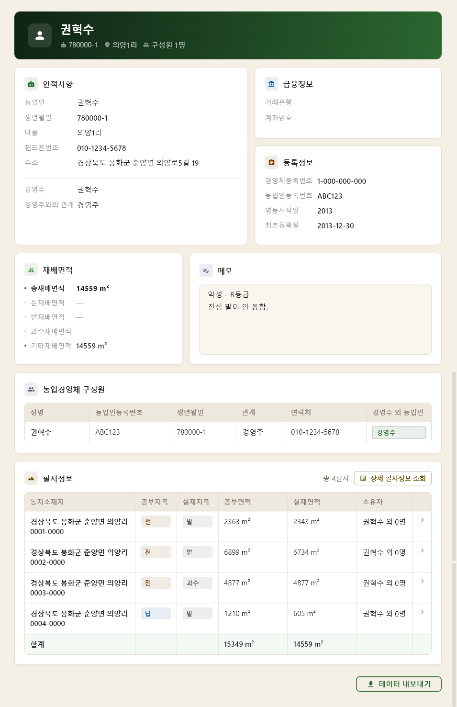
| 영역 | 내용 |
|---|---|
| 인적사항 | 주소, 연락처, 경영주 관계 등 |
| 금융정보 | 은행, 계좌번호 |
| 등록정보 | 영농 시작일, 최초 등록일 |
| 재배면적 | 논·밭·과수·기타 면적 (자동 계산) |
| 필지정보 | 모든 필지 목록 (행 클릭 시 필지 상세) |
| 메모 | 자유롭게 작성 (저장 버튼 클릭으로 저장) |
| 경영체 구성원 | 같은 경영체 가족·구성원 목록 |
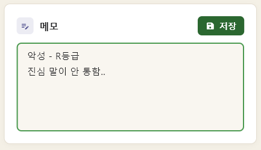
메모를 처음 입력하거나 수정하면 저장 버튼이 나타납니다. 버튼을 눌러야 저장돼요.
저장된 메모는 다음에 같은 농업인을 조회할 때도 그대로 남아있습니다.
3.3 데이터 내보내기
상세 화면 하단의 데이터 내보내기 버튼 → 농업인 정보를 엑셀(.xlsx) 파일로 저장합니다.
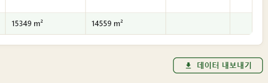
4. 농가 일괄조회
엑셀 파일로 여러 명의 농업인을 한꺼번에 조회합니다.
작업 흐름
4.1 1단계: 엑셀 업로드 + 프리셋 선택
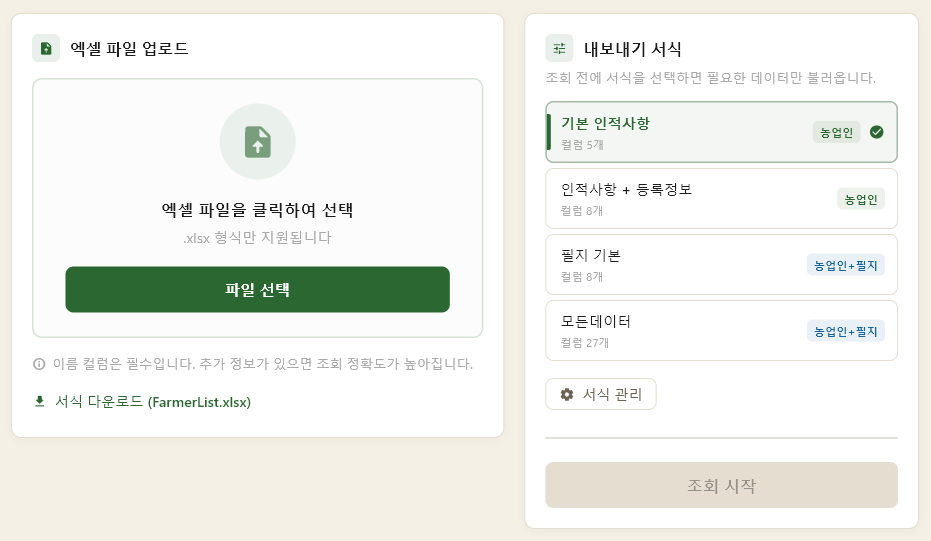

이름은 반드시 입력해야 합니다. 나머지 항목(생년월일·마을·연락처·주소)은 비워도 조회는 됩니다.
다만 나머지 정보를 함께 넣을수록 동명이인 확인이 정확해집니다. 같은 이름이 여러 명 검색될 때 자동으로 골라낼 수 있는 단서가 늘어나기 때문입니다.
- 사이드바에서 농가 일괄조회 클릭
- 좌측 — 엑셀 파일 선택 → 조회할 명단 엑셀 업로드
- 처음이면 우측 서식 다운로드 버튼으로 빈 양식부터 받기
- 우측 — 프리셋 선택 (어떤 항목을 결과에 포함할지)
- 기본 제공:
기본 인적사항,인적사항 + 등록정보,필지 기본 - 직접 만들고 싶으면 서식 관리 → 신규 프리셋 작성
- 기본 제공:
- 조회 시작 클릭
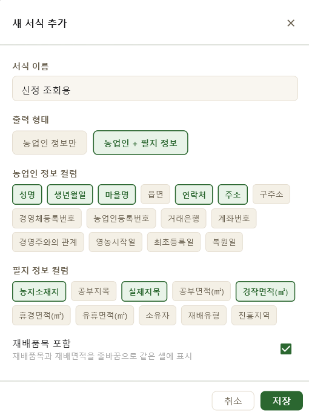
4.2 2단계: 동명이인 확인 (필요할 때만)

같은 이름·생년월일로 두 명 이상 검색된 경우만 나타납니다.
각 동명이인 카드에서:
- 후보 농업인 목록을 보고 라디오 버튼으로 선택
- 어느 후보도 맞지 않으면 해당 없음 선택
모두 해결 후 결과 확인 클릭.
4.3 3단계: 결과 확인 + 내보내기
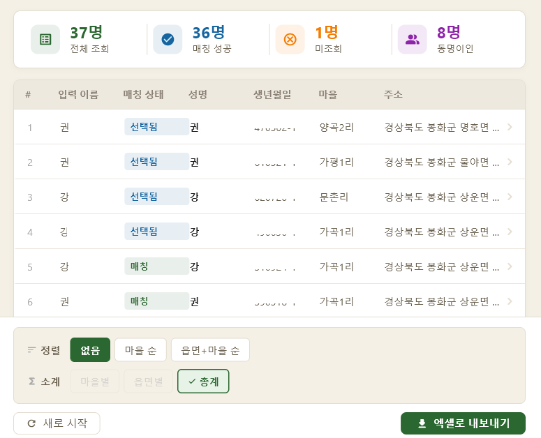
상단 요약 카드: 전체 N명 / 매칭 M명 / 미조회 K명
결과 테이블 행을 클릭하면 해당 농업인 상세 화면으로 이동합니다.
엑셀 내보내기
| 옵션 | 설명 |
|---|---|
| 정렬 | 정렬 안 함 / 마을별 / 읍면·마을별 |
| 소계 표시 | 마을·읍면별 면적 합계 자동 계산 |
| 엑셀 내보내기 | 파일명 자동 (일괄조회_YYYYMMDD_HHMM.xlsx) |
마을별 정리가 필요하면 읍면·마을별 정렬 + 소계 표시 ON
5. 신청서 작성 — 개별
한 명의 농업인을 위한 신청서를 자동 작성합니다.

5.1 양식 선택
좌측 양식 선택 트리에서 양식을 선택합니다.
- 폴더 구조:
담당과 / 사업종류 / 양식명
시스템 관리자에게 양식 추가를 요청하거나, 8. 양식 업데이트 버튼으로 최신 양식을 받아주세요.
5.2 농업인 검색·선택
우측 농업인 검색에서 농업인을 검색하고 클릭하면 인적사항이 자동으로 채워집니다.
5.3 인적사항 / 사업정보 입력
- 인적사항 — 자동 입력되지만 직접 수정 가능
- 사업정보 — 교부금, 자재, 사업비, 보조금 등
- 금액은 자동으로 천 단위 콤마 처리됨
- 단가가 비어있으면 사업비 ÷ 사업량으로 자동 계산
- 사업위치가 비어있으면 농업인 필지에서 자동 생성
5.4 담당자 정보
신청서 하단에 들어갈 소속 / 직급 / 담당자명 입력. 한 번 저장하면 다음부터 자동으로 채워집니다.
5.5 신청서 생성
하단 액션 바:
| 버튼 | 동작 |
|---|---|
| 초기화 | 입력값 모두 비움 (담당자 정보는 유지) |
| 신청서 생성 | 파일 저장 (저장 위치 선택) |
| 생성 후 실행 | 저장 + 즉시 한글 프로그램에서 열기 |
| 생성 후 출력 | 저장 + 자동 인쇄 |
같은 양식으로 여러 명을 작업할 때, 한 명 끝나면 초기화 누르고 다음 농업인 검색하면 됩니다.
6. 신청서 작성 — 일괄
여러 농업인의 신청서를 엑셀로 한꺼번에 작성합니다. 상단 일괄 작성 탭으로 전환합니다.

작업 흐름
6.1 양식 선택 + 엑셀 업로드
- 좌측 양식 선택에서 양식 클릭
- 우측 엑셀 파일 업로드 클릭, 명단·사업정보 엑셀 업로드
- 처음이면 서식 다운로드 버튼으로 빈 양식 받기
농가 인적사항 부분은 이름이 필수입니다. 나머지 항목(생년월일·마을·연락처·주소)은 비워도 조회는 됩니다.
다만 같이 입력할수록 동명이인 확인이 정확해집니다. 일괄조회와 같은 원리입니다.
6.2 공통 설정
| 항목 | 설명 |
|---|---|
| 신청일 | 오늘 날짜로 자동 입력 (수정 가능) |
| 단위 | 원 / 천원 / 만원 중 선택 |
| 출력 형태 | 개별 파일 = 1명당 1파일 / 하나로 결합 = 모두 1파일에 묶음 |
6.3 DB 조회
엑셀 업로드 영역의 DB 조회 버튼을 누르면 농업인을 검색합니다. 동명이인이 있으면 카드 형태로 나타나 선택할 수 있습니다.
6.4 신청서 일괄 생성
| 버튼 | 동작 |
|---|---|
| 초기화 | 입력값 모두 비움 |
| 신청서 일괄생성 | 저장 위치 선택 후 모든 신청서 생성 |
| 생성 후 실행 | 생성 + 자동 열기 (개별 모드 = 결과 폴더 / 결합 모드 = 결과 파일) |
hwpx 양식도 결합 모드를 지원합니다. 한글 프로그램에서 여러 페이지로 나뉘어 표시됩니다.
7. 신청서 양식 직접 만들기
한글 프로그램으로 직접 신청서 양식을 만들 수 있습니다. 치환 키만 잘 넣으면 농업인 정보가 자동으로 채워집니다.
7.1 양식 파일 만들기
- 한글 프로그램에서 신청서 양식을 자유롭게 작성합니다.
- 자동으로 채워질 위치에 치환 키를 입력합니다 (다음 섹션 참고).
- 파일 형식은
.hwpx(한글 2014 이상)을 권장합니다..hml형식도 지원하지만 가능하면.hwpx
7.2 치환 키 작성 규칙
치환할 위치에 중괄호 두 개로 키를 감싸서 입력합니다.
예: {{성명}}, {{주소}}, {{사업비}}
한글 양식 본문에 위와 같이 입력하면, 신청서 생성 시 해당 위치에 농업인 정보가 자동으로 들어갑니다.
예시 ─────────
신청인 성명: {{성명}}
주 소: {{주소}}
연 락 처: {{연락처}}
사 업 비: {{사업비}}{{단위}} (금{{사업비한글}}원)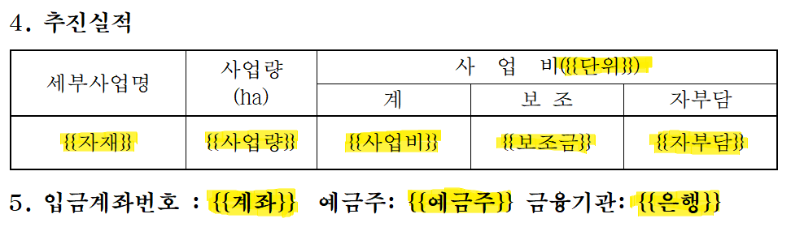
7.3 사용할 수 있는 치환 키
✏️ 핵심 (자주 쓰는 키)
👤 농업인 정보
💰 금융 정보
📊 사업 정보
📅 신청일 / 담당자
7.4 양식 파일 저장 위치
만든 양식 파일은 다음 경로에 저장합니다:
forms/
├── 담당과명/
│ └── 사업종류명/
│ └── 양식명.hwpx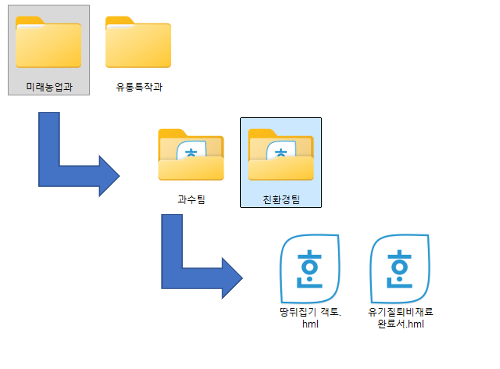
forms/담당과/사업종류/양식.hwpx 형태여야 양식 트리에 표시됩니다. 폴더 단계가 다르면 인식되지 않습니다.
같은 이름의 .hml과 .hwpx가 함께 있으면 .hwpx 우선으로 사용됩니다.
7.5 미인식 치환 키 경고
양식을 선택하면, 본문에 들어있는 치환 키 중 시스템이 인식하지 못하는 키가 있을 경우 양식 선택 카드 하단에 경고가 표시됩니다.
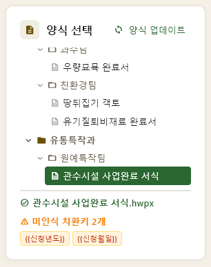
등록되지 않은 키 이름이 양식에 있습니다. 다음을 확인하세요:
- 키 이름이 위 목록과 정확히 일치하는지 (오타·띄어쓰기 주의)
{{와}}를 정확히 두 개씩 썼는지- 키 이름 앞뒤에 불필요한 공백이 없는지
7.6 양식 만들기 팁
- 금액 표시는
{{사업비}}{{단위}}형태로 — 자동으로 "5,000천원" 식으로 들어감 - 한글 금액은
금{{사업비한글}}원형태로 — "금오백만원" - 날짜는
{{신청년}}년 {{신청월}}월 {{신청일자}}일 - 같은 키를 여러 번 써도 됩니다 (모두 자동으로 채워짐)
8. 양식 업데이트
신청서 양식이 변경되거나 새 양식이 추가되면 GitHub에서 자동으로 받아옵니다.

사용 방법
- 신청서 작성 화면으로 이동
- 양식 선택 카드 우측 상단의 양식 업데이트 버튼 클릭
- 새 버전이 있으면 다운로드·설치
- 없으면 "최신 버전입니다" 안내
forms/ 폴더에 직접 추가한 양식 파일은 업데이트해도 사라지지 않습니다. GitHub에 있는 같은 이름 양식만 덮어쓰여집니다.
9. 자주 묻는 질문 (FAQ)
검색 결과가 안 나옵니다
- 이름·생년월일·연락처를 다른 형식으로 시도해보세요 (띄어쓰기, 한자 등)
- 데이터베이스(
farmbook.db) 파일이 정상 위치에 있는지 시스템 관리자에게 확인 요청
일괄조회에서 매칭 안 된 농업인이 많아요
엑셀의 이름·생년월일이 DB와 정확히 일치해야 매칭됩니다.
- 띄어쓰기 / 한자 표기 차이 확인
- 동명이인이 여러 명인데 모두 안 맞으면 "해당 없음"으로 표시됩니다
- 이름 외 정보(생년월일·마을·주소)를 함께 입력하면 정확도가 올라갑니다
신청서를 만들었는데 일부 항목이 빈 칸으로 나옵니다
- 양식의 치환 키(
{{성명}},{{주소}}등)와 입력값이 매칭되어야 합니다 - 양식 선택 카드 하단에 미인식 치환키 경고가 뜨면 양식의 키 이름이 잘못된 것 — 7. 양식 직접 만들기 참고
기본 제공 프리셋을 수정/삭제할 수 없어요
기본 제공 프리셋(기본 인적사항 등)은 수정·삭제 불가입니다.
직접 만든 프리셋은 자유롭게 수정/삭제할 수 있어요.
메모를 다른 PC에서도 볼 수 있나요?
메모는 farmbook_memos.json 파일에 저장됩니다. 이 파일을 같이 옮기면 다른 PC에서도 같은 메모가 표시됩니다.
신청서 양식의 작성된 파일은 어디에 저장되나요?
매번 저장 위치를 직접 선택하는 다이얼로그가 뜹니다. 원하는 폴더에 저장하세요.
직접 만든 양식이 트리에 안 나옵니다
forms/담당과/사업종류/형식의 2단계 폴더 구조여야 합니다- 확장자가
.hml또는.hwpx - 앱을 다시 켜거나, 다른 메뉴에 갔다가 신청서 작성으로 돌아오면 새로고침됩니다
치환 키를 어떻게 쓰는지 잘 모르겠어요
7. 신청서 양식 직접 만들기 섹션을 참고하세요. 치환 키 형식과 사용할 수 있는 키 목록이 정리되어 있습니다.